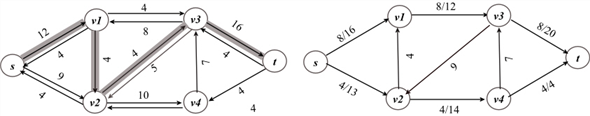
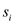
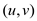
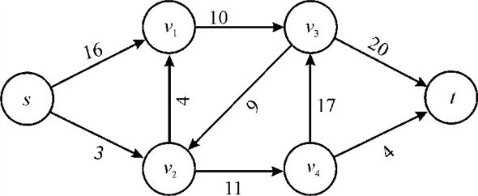
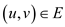
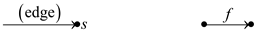
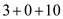
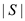
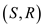

Flow network is the network which shows the automation of assembly line in the company from the warehouse to the manufacturing location and vice versa. In this network the raw material go to the destination through various stages to be a finished product.
The flow network has two basic terms that is flow of data and the capacity of the node or intermediate location.
Consider the equation:
… … (1)
In the above equation,
The functionsandis representing the flow from first vertex to the second.
The vertex set is the set of vertices towards which there is an edge from s.
Vertex set is the set of vertices from which there is an edge to s.So the terms in the equation representing the sum of flow of edges starting from the one vertex to other in the network flow and residual network.
The terms in the equation can be edited as:
The first term can be summed over V because for will be zero,
The second term can be summed over V because for will be zero.
The third and the fourth term can be summed over V since would be equal to V
Hence equation (1) can be composed as:
Hence, proved
Execution of the Edmonds-Karp algorithm
Edmond-Karp algorithm is the better version of Ford-Fulkerson algorithm and is used to compute the maximum flow in a network. The Edmond-Karp algorithm is same as the Ford-Fulkerson algorithm, except that Breadth first search (BFS) algorithm is used in the Edmond-Karp algorithm to find the augment path.
The following is the Edmond-Karp algorithm:
EDMONDS-KARP(G,s,t)
1 for each edge (u,v) G.E
2 (u,v).f = 0
//Breadth first search(BFS) is used to find the path p
3 while there is a path p from s to t in the residual network
4 cf (p)= min { cf (u,v): (u,v)is in p}
5 for each edge (u,v) in p
6 if (u,v) E
7 (u,v).f = (u,v).f + cf (p)
8 else (v,u).f = (v,u).f + cf (p)
• The EDMONDS-KARP algorithm sets the flow of all the edges to 0 in line 1-2.
• The Edmond-Karp algorithm uses the Breadth first search (BFS) algorithm to find the augment path in line 3. That is, in the Edmond-Karp algorithm, the augment path from source to sink is the path with minimum number of edges in the residual network.
• If there exist a path p in the residual network Gf , then the minimum capacity of the path p is calculated in line 4 using the following formula:
• Each edge in the path p is then augmented by and then the residual graph is updated in the line 6- 8.
• The above steps are repeated until there is a path p in Gf.
Consider the figure 26.1(a) in the textbook and execute the Edmond-Karp algorithm as follows:
1. The path  is the path
with minimum edges. Then the minimum capacity of path p is,
.
is the path
with minimum edges. Then the minimum capacity of path p is,
.
Thus, augment the path in the residual graph. The new network is on the right hand side.
2. The path is another path with minimum edges. Then the minimum capacity of path p is,
Thus, augment the path in the residual graph. The new network is on the right hand side.
3. The path is the path with minimum edges in the remaining paths. Then the minimum capacity of path p, the path capacity, is as follows:
Thus, augment the path in the residual graph. The new network is on the right hand side.

Since there is no further augmenting path in the network, the algorithm is terminated. The final network is as follows:
Hence, the maximum flow f( that reached t) for the network is, .
Consider S=and T=. The cut (S,T) is the minimum cut for the network shone in the figure 26.6.
The capacity for the cut is,
c(S,T) =c(v1,v3)+c(v4,v3)+c(v4,t)= 12+7+4=23
This is the minimum over all cuts of the network.
The Augmenting path (c) of three augmenting paths cancels the flow.

Consider the problem of converting a network with multiple sources and multiple sinks to a single source and a single sink. In this conversion, edges with infinite capacity are added from super source to all the sources, and edges with infinite capacity are added from sinks to super sink.
Flow in the new network has a finite value:
• To find a maximum flow of a network with multiple sources and multiple sinks, convert it into a single source to single sink problem and apply FORD-FULKERSON method.
• It can be observed that any flow in the resulting network corresponds to a flow in the multi-source, multi-sink network with the same flow.
• Consider that the edges of original network with multiple sources and sinks have finite capacity. While running FORD-FULKERSON algorithm on the resulting network, it can be observed that any flow along the augment path is finite, since the residual capacity is the capacity of any edge in the original network and it is finite.
Therefore, any flow in the resulting network is finite, if the edges of the original network have finite capacity.
Alternatively, a cut can be constructed such that it separates all the sources from all the sinks. That is, only edges of the original network cross the cut. Since only the edges of original network cross the cut, the net flow across the cut is finite.
Thus, the capacity of the cut is finite and any flow in the single-source , single-sink network is finite.
Flow network is a network, in which each edge (u,v) has some non-negative capacity c(u,v) 0. Thus, the maximum flow allowed between two nodes u and v is c(u,v). Source s and sink t are two special nodes in the flow network.
• The aim of the maximum flow problem of flow network is to find the maximum flow value between s and t.
• A flow network with multiple sources and multiple sinks can also be solved by converting it into a flow network with single source and single sink .
Now, consider a flow network with multiple sources,
forwith flow
of units and
multiple sinks
consumes
units and
multiple sinks
consumes units of
flow, for.
units of
flow, for.
• Assume that the total flow produced is the sum of flows produced at all sources in the network, and it is represented by p:
, Where
• Also assume that the total flow consumed is the sum of flows consumed by all sinks in the network, and it is denoted by q as:
, Where
• From the Flow network property,
The above network with multiple sources and multiple sinks can be turned into a flow network with single source and single sink as follows:
• Add a super source s to the network, such that there exist edges from super source s to each source si.
• Now assign capacity for each edge (s,si) as pi.
That is, c(s,si)=pi.
• Also add a super sink t to the network, such that there exist edges from super sink t to each sink tj.
• Now assign capacity for each edge (ti,t) as qj.
That is, c(tj,t) = qj.
The converted network can be represented as follows:
Hence, the converted problem can be solved using the method that finds maximum flow in a single source, single sink flow network.
To check that is a flow in with value check that it satisfies both the capacity constraints and flow constraints.
Capacity constraint: Since, the residual capacity is always less than or equal to the initial capacity, so each value of the flow is less than the capacity.
Flow constraint: Since is constant along a path, so flow should be conserved. This is because at each vertex interior to the path, the flow in from one edge is cancelled by the flow out to the next vertex in the path as in the edges that are given the flow is along the path.
FORD-FULKERSON procedure uses residual networks to decide an augmenting path in order to increase the net flow.
The residual network for a given flow network G and a flow f consists of the edges with capacities that represent how can we change the flow on edges of G.
An augmenting path p is a simple path from source s to sink t in the residual network. So by definition of residual network we can increase the flow of an edge of an augmenting path up to without violating any capacity constraints.
In the residual network edges leaving from s denote the residual capacity of that edge and edges going to s denote the capacity that is filled. If we disallow edges entering into , Then in the residual graph we can have only those edges for which the total capacity is not full till now that is we will show only outgoing edges that will carry the value equal to the residual capacity of the edge.
Since the flow conservation is not violated, we can inherently say that the Ford-Fulkerson algorithm would still remain correct.
So, even if we remove edges entering to the source s in the residual network, it will not affect the procedure FORD-FULKERSON and we will still be able to compute the maximum flow.
Run the Ford-Fulkerson algorithm and make the changes in it that an edge is removed if the flow of the graph G reaches its capacity. If f(u,v)=c(u,v),where f(u,v) denotes the flow of the graph and c(u,v) denotes the capacity of the graph then there should not exist any reverse edge in the residual network.
The result of the modified Ford-Fulkerson algorithm are the augmenting paths which are needed. There are at most |E| paths because every augmenting path produces at least one edge whose flow is equal to its capacity, which is set to be the actual flow for the edge in a maximum flow and the modification prevents the destruction of this program.
Thus, the main steps are:
• Find the maximum flow
• Get the minimum cut of the network.
• When one edge is saturated on the minimum cut each time, the upper bound is |E|
Flow Network
A flow network, in the most basic form, is a directed graph. Each of the edges has a capacity assigned to it. In the network a certain amount of flow goes from each edge of the network.
There are certain nodes in the graph from which the flow starts and to which the flow ends. These two nodes are called the source and sink of the network respectively.
Consider the following diagram of flow network:
In the following diagram the node s is the source of the network and the node t is the destination or sink of the network. Each of the graph edge has a capacity.
The capacity defines the data value that can go through that edge. The capacity is always a positive integer. One more thing is that if there is an edge from a vertex v1 to vertex v2 than there can be no edge from v2 to v1.

In the above diagram vertex s is the source and the vertex t is the sink or destination. The capacity of each edge is shown alongside the edge. As the edge from s to v1 has the capacity of 16.
A flow network has various applications in practicality. It is used in data warehouses, scientific research and electricity distribution etc.
Flow conservation:
In the flow network the flow conservation is defined as the property that none of the vertices that are not source or sink can store or create the flow.
That is for each vertex the flow coming to a vertex is same as the flow passing from that vertex. It means the total flow for a vertex at any time is zero.
For a graph G(V, E) having edge
The flow value of the edge which is not present in the edge set E will be zero that is if .
Capacity constraint:
The capacity of a vertex is the limit of the flow that can be allowed by the vertex to flow from that vertex. No edge can pass the flow through it beyond its capacity.
For any edge the value of flow must be in between zero and the capacity of the edge that is.
Proof for flow conservation and capacity constraint:
Consider the graph G (V, E)
Where V = the set of vertices and
E= the set of edges in the graph. For any edge the
value denotes the
flow from the vertex u to vertex v and denotes the
value of flow in the opposite direction.
denotes the
flow from the vertex u to vertex v and denotes the
value of flow in the opposite direction.
Now for a flow network it is required that if an edge then it’s opposite edge that is and so,
.
Thus,theequation 26.4 from the book can be rewritten as follows:
It implies that the new flow on each edge is simply the sum of the two flows on that edge.
Now consider u is a vertex other than source and sink in the network G that is
Hence, the augmented flow in the network G having flows f and satisfies flow conservation property of the network.
Now to showing thatneed not satisfy the capacity constraint by giving a simple counterexample.
Consider the flow networkGwhich has just a source and a
target vertex, with a single edge  having
capacity.
having
capacity.
Now define the flows fand to have
Then,
Therefore, it is not needed that satisfy the capacity constraint.
Hence, the augmented flow in a network G follows the flow conservation property but not the capacity constraint property.
Finding Edge connectivity:
Finding edge connectivity problem is an application of max-flow min-cut theorem. Min-cut of a network G is the cut whose capacity is the least of all possible cuts of G.
• If the capacities of all edges are 1, then the min-cut equals the edge capacity.
• If minimum cut is k, edge connectivity is also k. That is, G can be disconnected on removing k edges.
Solving Edge connectivity problem:
Consider that max-flow algorithm runs on a network and returns a max-flow of a residual graph.
Thus, Edge connectivity problem can be solved using the max-flow algorithm as follows:
• For any two vertices u and v in G, a flow network Guv with directed edges of capacity 1 can be defined such that, s=u and t=v.
• The max-flow algorithm like FORD-FULKERSON can be applied to find max-flow of Guv .
• Since all capacities are 1, the number of edges crossing a cut equals the capacity of the cut.
EDGE- CONNECTIVITY(G)
1 set initially k=
2 arbitrarily select any vertex u v
3 for each vertex v G.V-{u}
4 do set up the flow network Guv
5 fuv =FORD-FULKERSON (Guv,u,v) // finding max-flow of Guv
6 k=min(k, fuv)
7 return k|
The above algorithm runs O(V) times and finds the capacity of all possible cuts. The algorithm finds minimum of all these capacities in line 6. That is, k edges should be removed to disconnect the network.
Flow Network
A flow network, in the most basic form, is a directed graph. Each of the edges has a capacity assigned to it. In the network a certain amount of flow goes from each edge of the network. There are certain nodes in the graph from which the flow starts and to which the flow ends. These two nodes are called the source and sink of the network respectively.
In the diagram below the node s is the source of the network and the node t is the destination or sink of the network. Each of the graph edge has a capacity. The capacity defines the data value that can go through that edge. The capacity is always a positive integer. One more thing is that if there is an edge from a vertex v1 to vertex v2 than there can be no edge from v2 to v1.
In the above diagram vertex s is the source and the vertex t is the sink or destination. The capacity of each edge is shown alongside the edge. As the edge from s to v1 has the capacity of 16.
A flow network has various applications in practicality. It is used in data warehouses, scientific research and electricity distribution etc.
NETWORK FLOW:
It has been provided that a flow network  has the
edge which enters the source s. The flow f for that
edge is denoted by enters the
source and the value of that flow is equal to 1.
has the
edge which enters the source s. The flow f for that
edge is denoted by enters the
source and the value of that flow is equal to 1.
Proving that a flow exists, as, and its value is equal to f.
Proof:
If, it means there exists an edge having one unit of flow.

Reducing the flow by one unit means reduces to 0
Consider the flow network G and the flow f, so there is a path p from y to z. It means vertex y is flow connected to vertex z and each edge has positive flow. Define that y and s are flow connected to it.For the proof consider the lemma,
In a graph  which is a
flow network and f be a flow in this network now if
s, the source vertex is not flow connected to v,
then.
which is a
flow network and f be a flow in this network now if
s, the source vertex is not flow connected to v,
then.
Proof of lemma:
In the network, s is not flow connected to v; this means that no flow exists from s to v.
Thus, from the flow conservation concept,
Consider Y be the set of all vertices y, such that s is the flow connected to y.
Now, apply the flow conservation concept to all vertices in V-Y and take the sum.
Dividing V into Y,

But,
And
Since the flow from any vertex in Y to any vertex in V-Y must be 0,
Hence,
From the above equation,
for each and
Since and so,Now to construct the required flow :
Consider the contra positive of the lemma according to which. It means that there is some path p from s to v that is s is flow connected to v.
Take a path p’in the network which has a positive flow cycle on each edge.
1. In this, the capacity of eachedge is a positive value andat least 1.
2. For obtaining a flow f’, if 1 is subtracted from each and every edge of the cycle, the flow f’ still satisfies the concept of a flow network. The value of will be equal to.
Because for the edge is in the cycle,
Algorithm for computing :
The above procedure for provingcan be put in the form of the following algorithm.
Input:
Output:
// initializing the graph G
1. Initializea graph G having a path cycle p from v to s with flow
2. It is known that the source outflow will be one less.
// loop running for every edge of the graph
3. for each edge in graph and a new path p’
// to check for the edges that has some flow and decrease it by 1
4. check to see whether the flow edge will be
It means
Now subtracting by 1
// returning back
5. return still flow f’
// printing the statement
6. print “satisfying the flow network and also has the value”
Edge is in cycle
// returning back
7. return
8. return
The “for” loop in line 3 runs for E times and it checks, for each edges in the graph whether there is flow or not. Then all the traversed edges, which it goes through is put into the list.
Hence, the algorithm has a complexity of .
Flow Network
A flow network, in the most basic form, is a directed graph. Each of the edges has a capacity assigned to it. In the network a certain amount of flow goes from each edge of the network. There are certain nodes in the graph from which the flow starts and to which the flow ends. These two nodes are called the source and sink of the network respectively.
In the diagram below the node s is the source of the network and the node t is the destination or sink of the network. Each of the graph edge has a capacity. The capacity defines the data value that can go through that edge. The capacity is always a positive integer. One more thing is that if there is an edge from a vertex v1 to vertex v2 than there can be no edge from v2 to v1.
In the above diagram vertex s is the source and the vertex t is the sink or destination. The capacity of each edge is shown alongside the edge.As the edge from s to v1 has the capacity of 16.
Now the possible flows paths from the source to destination can be:

There might be a few more flow paths as well. The maximum flow
possible through a path is equal to the minimum capacity of an
edge. For example in the first flow path, the
maximum flow would be12.
A cut in a network is the set of network edges that, when removed from the network stop the flow of data from the source to sink. Amongst the set of cuts the one that has the minimum capacity is known as the minimum cut.
A flow network has various applications in practicality. It is used in data warehouses, scientific research and electricity distribution etc.
To find the minimum cut with least amount of edges the Maximum Flow Minimum Cut theorem can be used.
This theorem says that in a flow network, the maximum quantity of flow going from source to sink will be always equal to the least or minimum quantity which when discarded in a particular way from the network creates the condition that neither of the flow can go through from the source to the sink.
For example:
In the above graph the possible cuts are:


Removal of any of the given set of edges would leave the network disconnected and reaching destination from source would not be possible either way.
In the possible cuts of the above network the cuthas the least capacity and that is. The edge v2v1 is assigned acapacity 0 because that is in the reverse direction of sv2 and v1v3.
Modifying the capacities of G :
Modification of the capacitiesof various paths of G to
create a new flow network  in which
any minimum cut in is a minimum
cut with the fewer number of edgesinG. The process of
modifying the cut in G is as:
in which
any minimum cut in is a minimum
cut with the fewer number of edgesinG. The process of
modifying the cut in G is as:
? Try to find a minimum cut in the graph G with a changed variable;
? The fundamental to be applied here is as the cost incurred in a cut is equal to the total capacity moving through the cut, for this change the graph by adding up a new edge from every node in the graph to t that have capacity one.
? The above line or method implies that each node in the same region of cut as swill provide one extra cost to the total cost of the cut.
? As the edges from that particular node to t would be go through that edge.
? Now consider the following changes:
a. Make product of the edges by multiplying with V, here V is the number of nodes in the graph.
b. Add one to each and every node of the graph.
? The maximum contribution which is possible from this edge altogether to the cut cost is. As the cost of the older minimum cut was N,
The cost incurred in new minimum cutis
 .
.
Here,is the number of nodes on the same side of the cut ass.
? Take a directed graph having some
capacity in every edge and a source and sink pair
,
? Construct the new graph by the
following steps:
1. For every edge  in the
graph, multiply it with capacity c
in the
graph, multiply it with capacity c
2. For every node v in the graph, add edge which is new which have capacity 1.
3. Calculate a minimum cut in the graph.
Hence, the new flow
would be achieved which is having a minimum cut with itself with
smallest number of edges.Mathematical manipulation:
Suppose there are two cuts  and
in
the first graph G and  and
and be their respective capacities. Because G’ is the enhanced
graph made by using G so this will have the same cuts as
Ghas.
be their respective capacities. Because G’ is the enhanced
graph made by using G so this will have the same cuts as
Ghas.
Now, it is known that every edge has got an addition of d in the capacity.
So, the total capacity of the cut would be increased by d.
So,
If has fewer
edges than then the
capacity of would be
less thanthat is the
contradiction of consideration. This will be always true regardless
how many edges are there in the cut.
So, the minimum cut owning least number of edges in G’ would be the minimum cut with least number of edges in G.
Now, choosing the value of d carefully is important. Suppose, in G, the difference between the capacities of two cuts is x.
So,
Here, E is the number of edges in the graph.
For
Now, if is less than then it needs to be proved that is less than.
The capacity can only be positive. So, x can be any positive number. The simplest value would be 1 and all the edges can be doubled to yield the below given result:
Hence, the new network flow can
be gotten which is having a minimum cut with itself with smallest
number of edges.